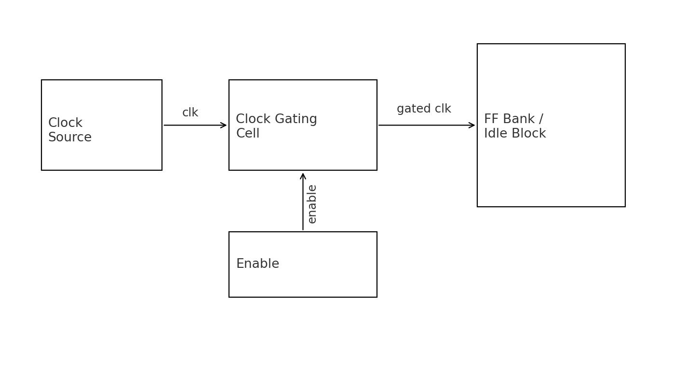
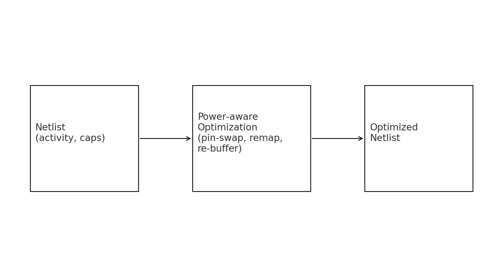
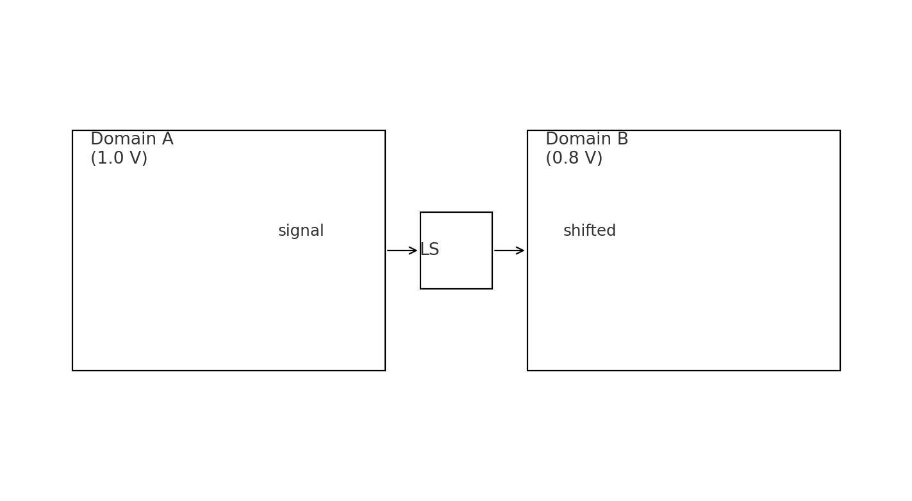
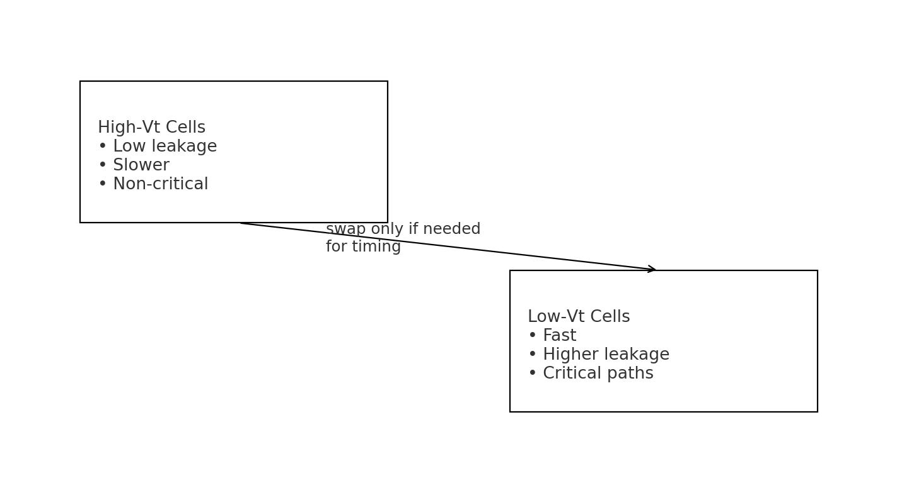

Introduction
Most power savings in modern SoCs come from a handful of well-tested ideas: stop clocks when logic is idle, reduce unnecessary switching, lower voltage where you can, and use higher-threshold cells when speed isn’t critical. This guide explains how each method works, how it’s applied in physical design, and what to double-check before tape-out.
Clock gating
Goal: eliminate dynamic power by stopping the clock for idle blocks.

- Where it happens: RTL (intent), synthesis (inference) or explicit insertion using ICG cells.
- Enable logic: stable, glitch-free, synchronized to the parent clock domain.
- CTS considerations: gated clocks are separate trees; balance skew/latency vs. ungated paths.
- Verification: CDC/GLS around enable boundaries; ensure scan/test can still force clocks.
- Use library ICG cells (integrated clock gate) instead of random AND/OR logic.
- Synchronize enables; avoid combinational feedback into the gate.
- Constrain CTS: define generated clocks from ICG outputs.
- Test: ensure scan can bypass or force clocks high as needed.
Gate-level power optimization
Goal: minimize switching activity & capacitance for the same function.

- What tools do: pin swapping on symmetric cells; re-mapping to lower-cap cells; buffer triage; logic restructuring.
- Inputs needed: realistic activity (VCD/SAIF) and decent parasitic estimates.
- Trade-offs: timing vs. power vs. area; lock critical cells to prevent timing regressions.
- Provide activity files from representative simulations (or toggle estimates).
- Run power-aware optimizations after global route when parasitics are stable.
- Protect timing-critical instances with dont_touch/dont_use as needed.
Multi-VDD (voltage islands)
Goal: run non-critical or always-on logic at a lower VDD to cut dynamic + leakage power.

- Power domains: define islands and power intent (UPF/CPF in commercial flows; document clearly in open flows).
- Boundary cells: level shifters between islands; isolation cells for power-gated blocks.
- Floorplan impact: rings/straps per domain; place boundary cells near crossings for short routes.
- Timing impact: models per VDD; STA must analyze each domain at the right corner.
- Always cross islands through level shifters (up or down as required).
- Keep isolation when a neighbor can be powered off.
- Route power straps per domain; confirm IR-drop separately for each VDD.
Multi-threshold (multi-Vt)
Goal: use high-Vt cells to cut leakage where timing margin exists; reserve low-Vt for critical paths.

- Strategy: default to HVT; selectively swap to SVT/LVT to fix violations.
- Hold safety: LVT speeds up data; re-check hold after swaps and CTS.
- Lib mix: use consistent threshold sets for memories & hard macros too.
1) Start HVT-first → low leakage baseline
2) Close setup with targeted LVT swaps on true critical arcs
3) Re-balance holds (buffers, useful skew)
4) Re-measure total leakage vs. timing guard-bands
What to verify
- STA: corner coverage per domain/Vt; generated clocks for gated trees; reconvergent-fanout sensitivity.
- DRC/LVS: boundary cells, special well ties for multi-Vt, domain straps & tap spacing.
- Power sign-off: vector-based + vectorless checks; IR-drop per domain; EM on gated spines.
- DFT: scan/ATPG can force clocks; isolation/retention test modes behave as expected.
Impact summary
- Clock gating: biggest dynamic saver on idle logic; verify enables & testability.
- Gate-level power opt: trims switching/caps with minimal risk when guided by good activity.
- Multi-VDD: architectural win — best when blocks have natural performance tiers.
- Multi-Vt: leakage control knob — use LVT only where timing truly needs it.
FAQ
Can I mix all four techniques? Yes — most chips do. Start with clock gating + multi-Vt, add islands where architecture allows, then polish with gate-level power optimization.
Do open-source flows support UPF? Partial. You can still document domains, insert boundary cells explicitly, and verify timing per “manual” scenario.
You might also like